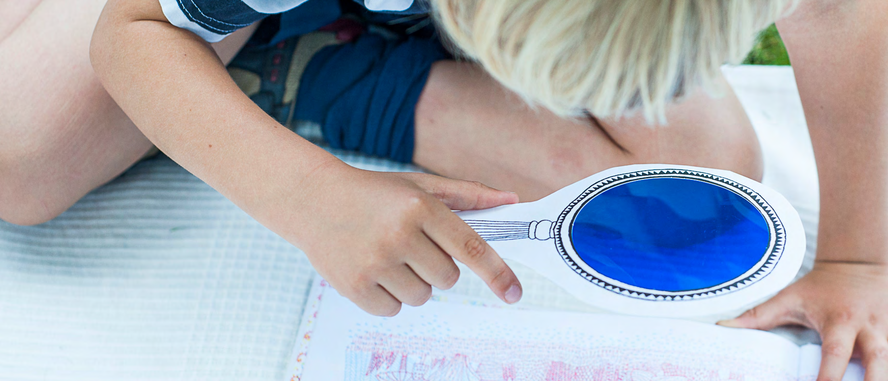
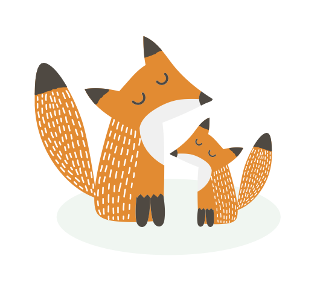
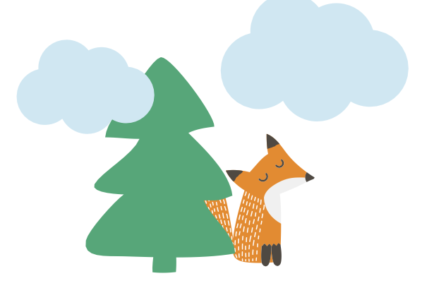
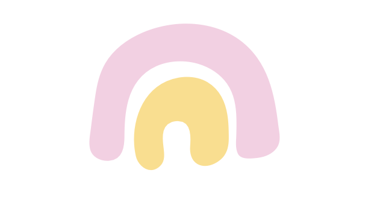
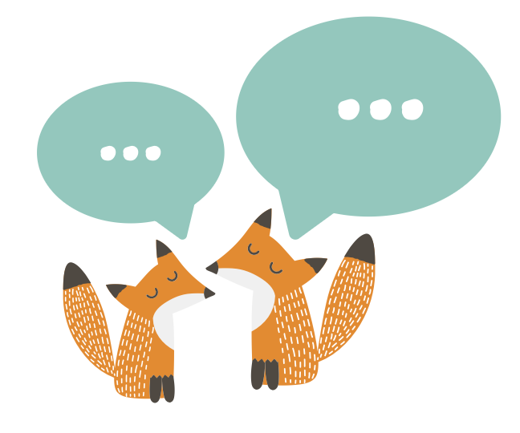
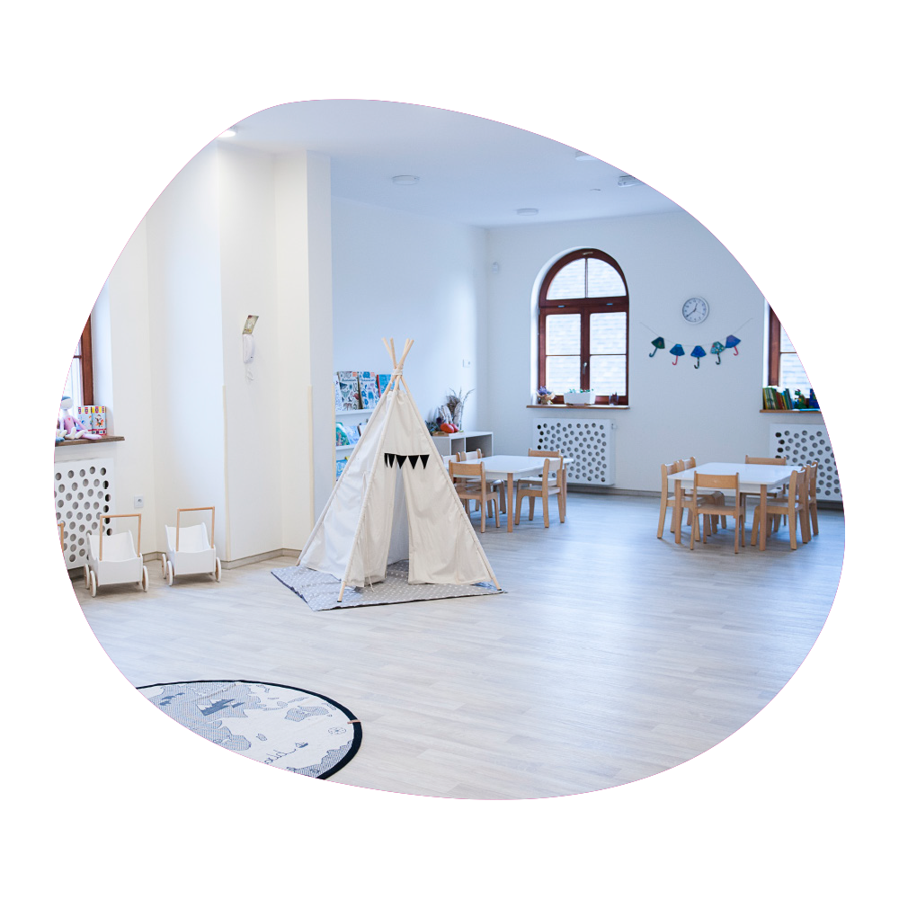
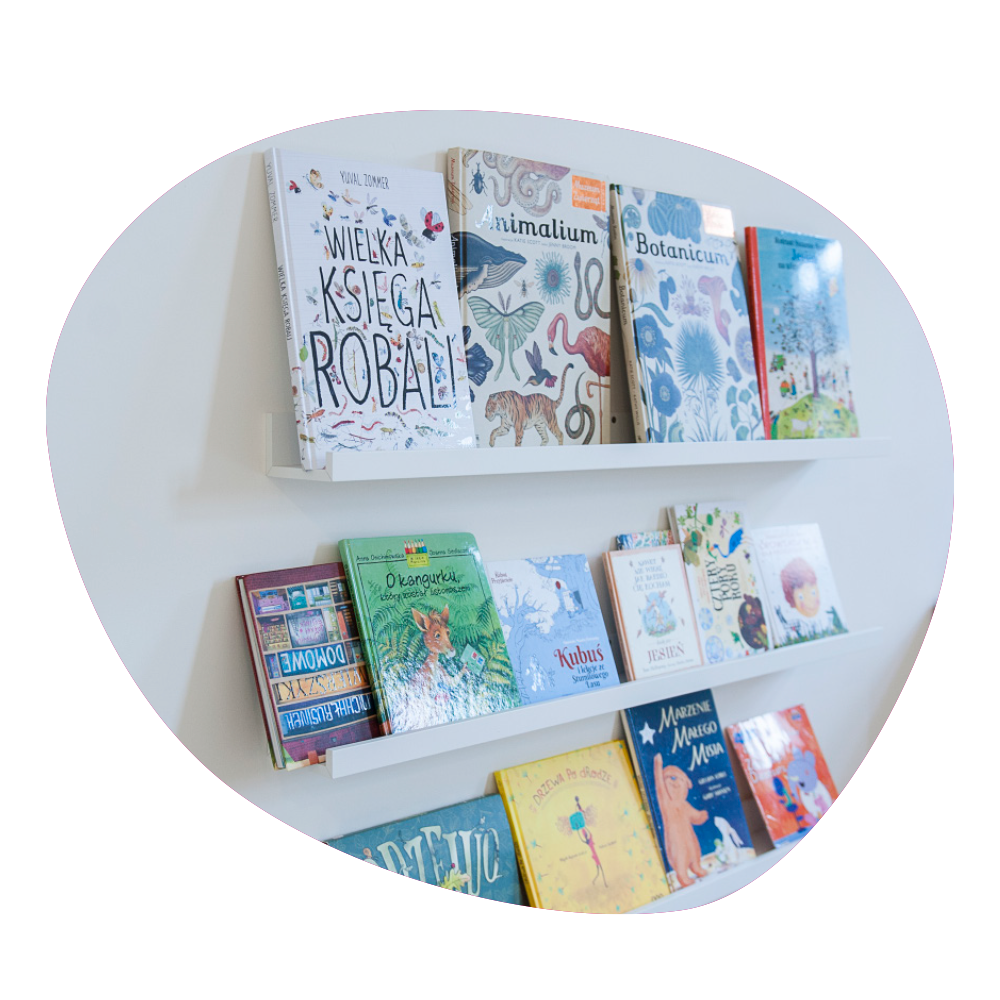
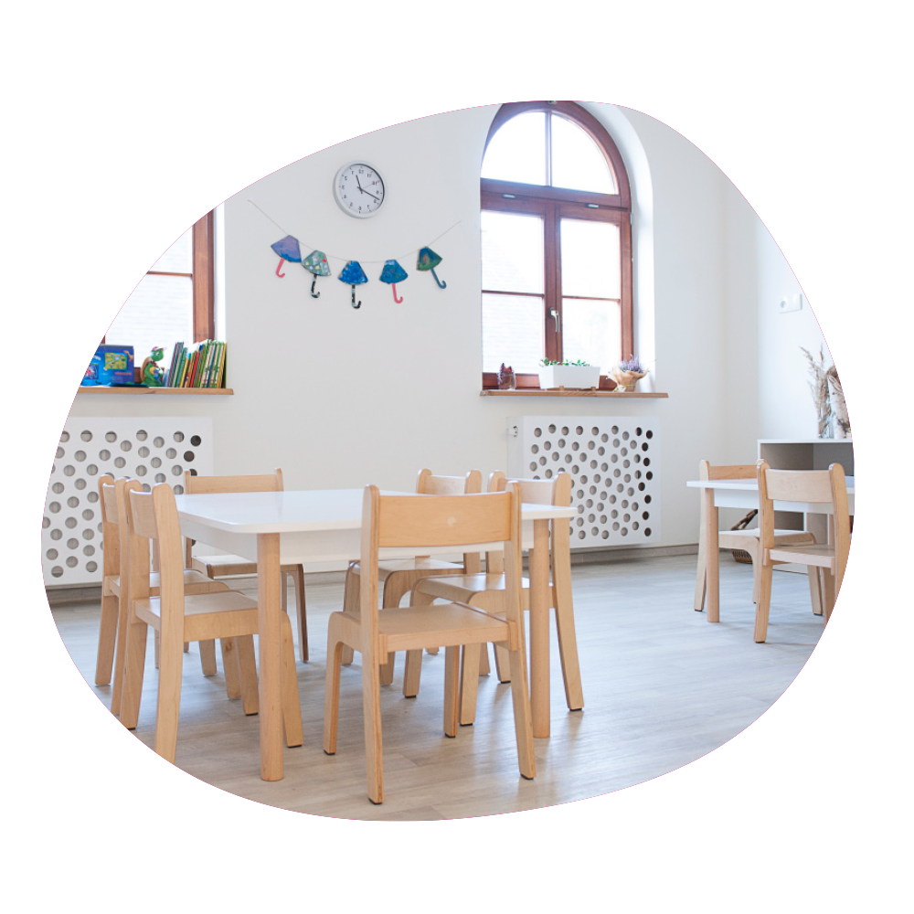

Dbanie o harmonijny rozwój dziecka w przyjaznym dla niego otoczeniu jest jednym z najważniejszych założeń naszego przedszkola. Podstawą jest dla nas traktowanie dziecka z szacunkiem i uważnością oraz zapewnienie mu stymulujących, optymalnych warunków do jego rozwoju. Wierzymy, że dziecko pragnie i umie się rozwijać, wzrastać, a naszym zadaniem jest stworzenie mu do tego odpowiednich warunków.
Dlatego proponujemy dużo ruchu i aktywności, odpowiednie odżywianie, podążanie za potrzebami i emocjami dziecka, kształtowanie wartości, jasnych reguł i zasad. Stawiamy na naukę samodzielności, współpracy, uważności i rozwiązywania problemów. Rozmowa, obecność i akceptacja każdego dziecka przez naszych pracowników to stały element życia naszego przedszkola. Zapewniamy też przestrzeń na odpoczynek oraz naturalną, swobodną zabawę – każdego dnia.
czytaj więcej…
blisko
dziecka
Pielęgnowanie więzi człowieka z przyrodą poprzez tworzenie warunków do samodzielnej eksploracji otaczającej dziecko przyrody jest jednym z najważniejszych założeń naszego przedszkola. Rozumiemy przez to rozwijanie u dziecka szacunku dla systemu ekologicznego ziemi i naukę życia w zgodzie z naturą i jej rytmem.
Zależy nam na tworzeniu warunków pozwalających na bezpieczną, samodzielną eksplorację otaczającej przyrody. Nasze przedszkolaki spędzają znaczną część czasu na powietrzu – uczą się, bawią, odkrywają i eksperymentują. Prowadzimy też inspirujące programy ekologiczne przy udziale ekspertów, promując zainteresowania przyrodnicze i aktywny tryb życia.
czytaj więcej…
blisko
natury
Atmosferę miejsca tworzą ludzie, dlatego tak dobraliśmy kadrę, aby z szacunkiem umiała przekazać dziecku to, co ważne i cenne dla jego rozwoju. Kadrę specjalistów tworzą ludzie, którzy z ogromnym zaangażowaniem dbają o bezpieczną przestrzeń dzieci do tego, aby ich pobyt w przedszkolu stanowił czas na ruch i zabawę, a także dawał pole do doświadczeń rozwojowych budujących w pełni dojrzałość szkolną.
Nauczyciele organizują zajęcia dostosowane do możliwości i potrzeb poznawczych dzieci, uwzględniając ich stany emocjonalne. Ich komunikacja wspiera rozwój optymistycznego stylu wyjaśniania i budowanie w dzieciach nastawienia na rozwój. Naturalne pomoce, obecne w otoczeniu dziecka, są dla niego zachętą do twórczej zabawy i rozwoju.
czytaj więcej…
w przyjaznym
otoczeniu
Zajęcia, które proponujemy dla dzieci w plenerze, wycieczki i spotkania z ciekawymi ludźmi, są dla nas pomysłem na rozwijanie u dziecka zainteresowań, wrażliwości i stanowią też zachętę do samodzielnych poszukiwań zgodnie z ich tempem i rozwojem oraz poszanowaniem jego indywidualnych potrzeb, oryginalności i jego zainteresowań. Takie wizyty pomagają również odpowiadać na pytania „Jak to działa?", „Jak rozwiązać problem?".
Zapewniamy też częsty kontakt z językiem angielskim – nie tylko w czasie zajęć, ale też w sytuacjach codziennych, oraz bogatą ofertę zajęć pozaprogramowych dostosowanych do indywidualnych zainteresowań dzieci.
czytaj więcej…w ciekawy
i inspirujący
sposób
Dbając o prywatność dzieci i ich rodzin nie publikujemy zdjęć dzieci w galeriach ani portalach społecznościowych. Rodzice przedszkolaków po wpisaniu hasła mogą oglądać fotografie.

Zależy nam na współpracy z Rodzicami i współdziałaniu na rzecz dzieci, dlatego rozmawiamy, wspieramy ale i prosimy o wsparcie. Organizujemy też profesjonalne szkolenia i spotkania z autorytetami z dziedziny rozwoju, wychowania i zdrowia dziecka, w których biorą udział zarówno Rodzice jak i Kadra przedszkola.


